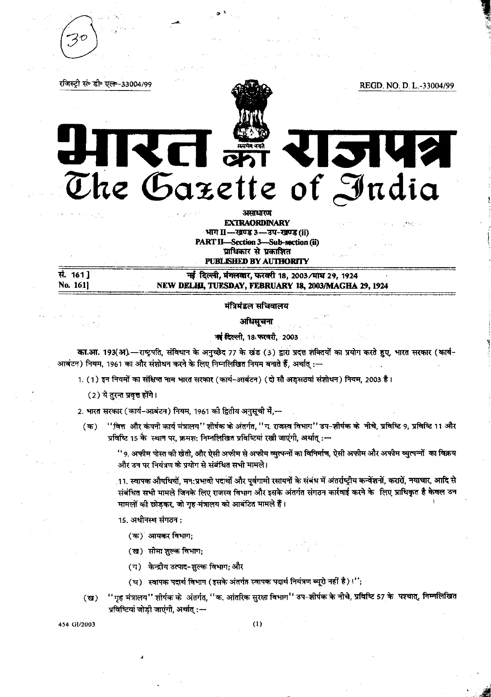
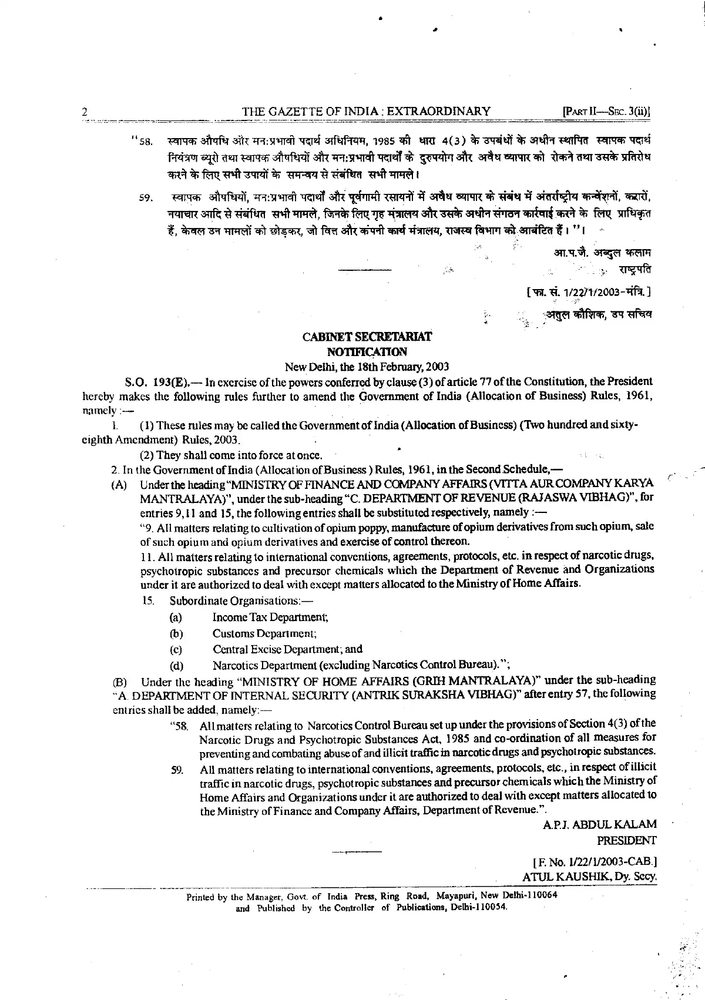

Amendment #268 (S.O. 193(E), 2003)
2 changes: 0 to the First Schedule, 2 to the Second Schedule. 1 applied1 not applied
The order, page by page
Page 1 of 2

Page 2 of 2

12Schedule 2 › MINISTRY OF FINANCE AND COMPANY AFFAIRS › DEPARTMENT OF REVENUE › entry 15; Schedule 2 › MINISTRY OF FINANCE AND COMPANY AFFAIRS › DEPARTMENT OF REVENUE › entry 15; Schedule 2 › MINISTRY OF FINANCE AND COMPANY AFFAIRS › DEPARTMENT OF REVENUE › entry 15
- 9. All matters relating to cultivation of opium poppy, manufacture of opium derivatives from such opium, sale of such opium and opium derivatives and exercise of control thereon.
- 11. All matters relating to international conventions, agreements, protocols, etc. in respect of narcotic drugs psychotropic substances and precursor chemicals which the Department of Revenue and Organizations under it are authorized to deal with except matters allocated to the Ministry of Home Affairs.
- 15. Subordinate Organisations:-
- a. Income Tax Department
- b. Customs Department
- c. Central Excise Department; and
and 1 more
- d. Narcotics Department (excluding Narcotics Control Bureau).
applied at schedule 2 › ministry MINISTRY OF FINANCE AND COMPANY AFFAIRS › department C › entry 15 in the Rules after #268
after Schedule 2 › MINISTRY OF HOME AFFAIRS › DEPARTMENT OF INTERNAL SECURITY › entry 57
- 58. All matters relating to Narcotics Control Bureau set up under the provisions of Section 4(3) of the Narcotic Drugs and Psychotropic Substances Act, 1985 and co-ordination of all measures for preventing and combating abuse of and illicit traffic in narcotic drugs and psychotropic substances.
- 59. All matters relating to international conventions, agreements, protocols, etc., in respect of illicit traffic in narcotic drugs, psychotropic substances and precursor chemicals which the Ministry of Home Affairs and Organizations under it are authorized to deal with except matters allocated to the…
not applied (the change could not be placed in the Rules as read; see How this document was read)
How this document was read
Known issues
| Change | Issue | Known as |
|---|---|---|
| 2 | change 2: no entry 57 under schedule 2 › ministry MINISTRY OF HOME AFFAIRS › department A | Entries not in the state |
From the Government of India (Allocation of Business) Rules, 1961 and their amendments, as published by the Cabinet Secretariat (cabsec.gov.in), read by orgpedia. The readings of the older scanned gazettes have known gaps.